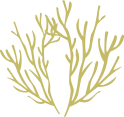
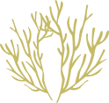

WARNING!
"Onze relatie met het ruime sop kenmerkt zich door rucksichtlose plundering en bevuiling. In vijftig jaar tijd aten we alle gezonde vispopulaties naar het randje van de afgrond, bouwden we allerlei ontwrichtende structuren in en langs water en dumpten we tonnen plastic, poep en allerhande chemicaliën in de open oceaan die zo van één naar meer dan vijfhonderd dode zones ging".